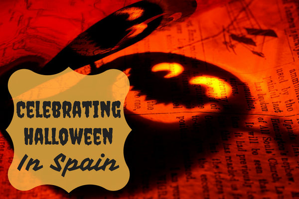
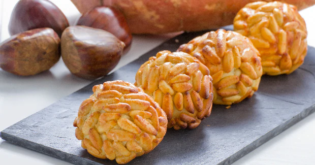
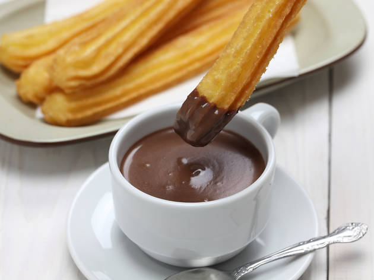

HALLOWEEN IN SPAIN
The expansion of American culture throughout the world mainly through cinema is conducive to the arrival of Halloween in Spain in Anglo-Saxon form. Within Spain there was already a tradition on the 1st day that was the day of all the saints. There are typical dishes in Spain, such as windmills, holy bones, panellets, chocolate with fritter (churros).
 